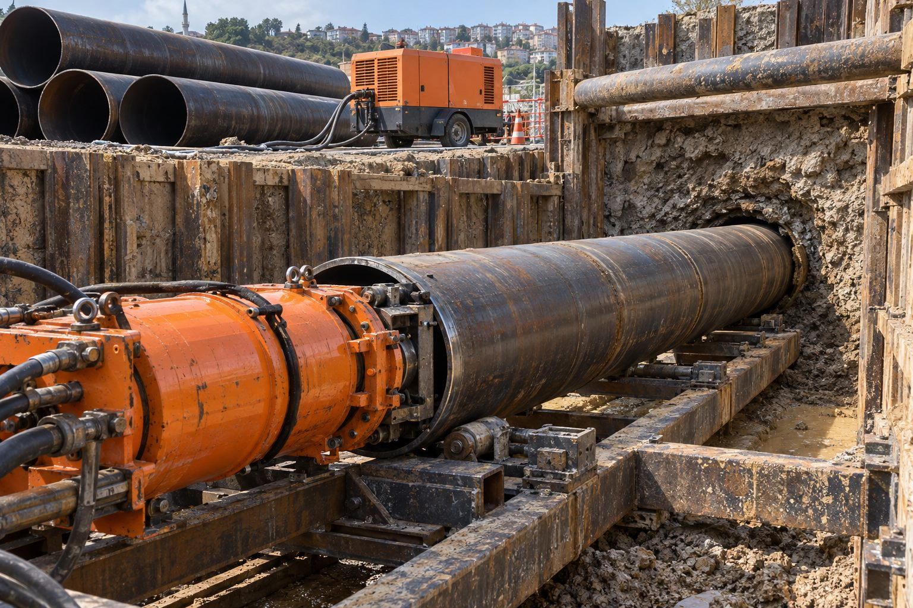

Dayanıklı kılıf
Çelik kılıf hattı yük, darbe ve zemin hareketinden korur.
Hizmetlerimiz · 05

05Çelik Boru Sürme · Yiba saha uygulamasıÇelik Boru Sürme
Yük ve saha koşulları dikkate alınarak çelik kılıf boruların geçiş güzergâhına uygun şekilde sürülmesi.
Çelik boru sürme, özellikle karayolu ve demiryolu altındaki geçişlerde, hattı koruyan çelik kılıfın zemine kademeli olarak itilmesiyle yapılır. Kılıf içine daha sonra taşıyıcı boru, kablo veya hat yerleştirilir.
Çelik kılıfın et kalınlığı, çapı ve kaynak detayları ilgili kurum şartnamelerine göre belirlenir. Uygulama giriş ve çıkış çukurları arasında, yüzeyi açmadan tamamlanır.
Neden Yiba?
Çelik kılıf hattı yük, darbe ve zemin hareketinden korur.
Et kalınlığı ve kaynak detayları kurum şartlarına göre.
Karayolu ve demiryolu idarelerinin kabul ettiği yöntem.
Hidrolik ünite ile kademeli, hassas ilerleme.
Sık sorulan sorular
Doğalgaz, su, enerji kabloları ve fiber optik hatlar kılıf içinde korunarak geçirilir.
Evet, kılıf boyları giriş çukurunda sürme sırasında kaynakla eklenir.
Karayolu ve demiryolu geçişlerinde ilgili idarenin izni ve şartname uyumu gerekir; süreçte destek veriyoruz.